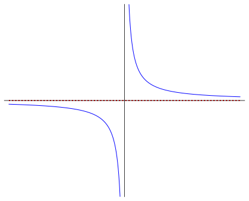

Give formal definition of limit of function at (plus and minus) infinity.
Investigate limits at infinity graphically.
Introduce valid rules and formulas for limits at infinity.
Evaluate limits at infinity using limit rules and formulas.
Define horizontal asymptotes using language of limits at infinity.
We motivated the introduction of limit notation as a useful and precise way of describing the behavior of the values of a function \(f\) as its inputs approach a fixed real number \(a\in \R\text{.}\) It is natural to ask, however, how the values of \(f\) vary as inputs move off to infinity in the positive or negative direction. For example, suppose the number of sales \(s\) of a product is given as a function \(s=f(t)\text{,}\) where \(t\) is the number of days since the product’s introduction to the market. Naturally, a sales team would be interested in what happens to \(f(t)\) as \(t\) goes to infinity. The definition below makes rigorous sense of this “going to infinity” business. Notice that it is not so very different than our usual epsilon-delta definition of the limit.
Definition8.1.Limits at infinity.
Limit at \(\infty\).
Suppose \(f\) is defined on an open interval of the form \((a,\infty)\text{.}\) We say that the limit of \(f\) at positive infinity (or at \(\infty\)) exists if there is a value \(L\) satisfying the following property: for all \(\epsilon> 0\text{,}\) there exists a \(M\geq a\) such that if \(x> M\text{,}\) then \(\abs{f(x)-L}< \epsilon\text{.}\) Using logical shorthand:
\begin{equation*}
\text{for all } \epsilon> 0, \text{ there is } M\geq a, \text{ s.t.
} x> M\implies \abs{f(x)-L}< \epsilon\text{.}
\end{equation*}
When this is the case, we call \(L\) the limit of \(f\) as \(x\) approaches positive infinity (or \(\infty\)), and write
Suppose \(f\) is defined on an open interval of the form \((-\infty,a)\text{.}\) We say that the limit of \(f\) at negative infinity (or at \(-\infty\)) exists if there is a value \(L\) satisfying the following property: for all \(\epsilon> 0\text{,}\) there exists a \(M\leq a\) such that if \(x< M\text{,}\) then \(\abs{f(x)-L}< \epsilon\text{.}\) Using logical shorthand:
\begin{equation*}
\text{for all } \epsilon> 0, \text{ there is } M\leq a, \text{ s.t.
} x< M\implies \abs{f(x)-L}< \epsilon\text{.}
\end{equation*}
When this is the case, we call \(L\) the limit of \(f\) as \(x\) approaches negative infinity (or \(-\infty\)), and write
Informally, we have \(\lim\limits_{x\to \infty}f(x)=L\) if we can make \(f(x)\) arbitrarily close to \(L\) for all inputs \(x\) that are sufficiently large and positive. It is useful to think of the \(M\) in the formal definition as a large positive number such that \(f(x)\) is guaranteed to be within \(\epsilon\) of \(L\) for all \(x\) is greater than (i.e., to the right of) \(M\text{.}\)
Similarly, we have \(\lim\limits_{x\to -\infty}f(x)=L\) if we can make \(f(x)\) arbitrarily close to \(L\) for all inputs \(x\) that are sufficiently large and negative. In this case, it is useful to think of the \(M\) in the formal definition as a large negative number such that \(f(x)\) is guaranteed to be within \(\epsilon\) of \(L\) for all \(x\) less than (i.e., to the left of) \(M\text{.}\)
Remark8.3.At infinity versus at a point.
The limit at infinity notation is very similar to the limit at a point notation:
That said, do not make the mistake of thinking that we are somehow treating infinity as if it were an actual real number. Think of our new notation as an extended version of our old notation. The ‘\(x\to\infty\)’ in the subscript is just a sort of shorthand for saying “as \(x\) gets sufficiently large and positive”. In fact, so useful is this \(x\to \infty\) shorthand, that you will see us use it frequently on its own, outside of the limit notation.
Graphically speaking, if \(\lim\limits_{x\to \infty}f(x)=L\text{,}\) then the \(y\)-values of points on the graph of \(f\) will get closer and closer to \(L\text{,}\) as \(x\to \infty\text{.}\) This means the graph of \(f\) will get arbitrarily close to the horizontal line \(y=L\) for points lying further and further to the right. A similar observation holds if the limit at \(-\infty\) exists. This is illustrated in Figure 8.4 for the graph of a function \(f\) that satisfies
Figure8.4.Graph of function \(f\) satisfying \(\lim\limits_{x\to -\infty}f(x)=-2\) and \(\lim\limits_{x\to \infty}f(x)=1\)
When a curve in the plane behaves in such a manner, we say that it has a horizontal asymptote. We give a formal definition of this below for the graph of a function, using limit-at-infinity notation.
Definition8.5.Horizontal asymptote.
The line \(y=L\) is a horizontal asymptote of the graph of a function \(f\) if \(\lim\limits_{x\to \infty}f(x)=L\) or \(\lim\limits_{x\to -\infty}f(x)=L\text{.}\)
The existence or nonexistence of horizontal asymptotes for the graph of a function gives us an easy visual way of deciding whether limits at infinity exist.
Example8.6.Limit at infinity: \(\cos\).
Let \(f(x)=\cos x\text{.}\)
Provide a graph of \(f\) over its entire domain.
Argue graphically whether the infinite limits \(\lim\limits_{x\to \pm \infty}f(x)\) exist.
Solution.
Fix a positive integer \(n\) and define \(f\colon \R-\{0\}\rightarrow \R\) as \(f(x)=\frac{1}{x^n}\text{.}\) We recall that the graph of such a function looks like one of the graphs in Figure 8.7, depending on whether \(n\) is even or odd.
(a)\(n\) odd
(b)\(n\) even
Figure8.7.Graphs of \(f(x)=\frac{1}{x^n}\text{,}\) for positive integer \(n\text{.}\)
In all cases we see that the graph of any such function \(f(x)=\frac{1}{x^n}\) has \(y=0\) both as a right and left asymptote. This suggests that
It is not so surprising that “at infinity” limits satisfy “at infinity” versions of the limit rules in Theorem 2.13, as we as the sandwich theorem. Note, however, that our various “evaluation limit formulas” (e.g., polynomial evaluation) do not extend to limits at infinity, as it simply makes no sense to evaluate a function \(f\) at \(\infty\text{:}\) that is, it simply makes no sense to write \(f(\infty)\) or \(f(-\infty)\text{.}\)
It is worth stating explicitly the “at infinity” version of the replacement rule, which has a slightly different flavor than the original version. We do so only for positive infinity: suppose \(f\) and \(g\) are defined on an open interval \((a,\infty)\) and that \(\lim\limits_{x\to \infty}g(x)\) exists; if there exists an \(M\geq a\) such that \(f(x)=g(x)\) for all \(x\geq M\text{,}\) then \(\lim\limits_{x\to \infty}f(x)=\lim\limits_{x\to \infty}g(x)\text{.}\) In plain English: if \(f\) and \(g\) are eventually equal to one another, than their limits at \(\infty\) are equal.
The formulas in Theorem 8.8 give us a decent starting point in terms of computing limits at infinity. Combining these formulas and with limit rules, we can compute limits at infinity for more complicated functions. In order to make use of Theorem 8.8, however, we often have to include an algebra step first.
Example8.10.Limit at infinity: rational function.
Let \(f(x)=\displaystyle\frac{3x^3-100x}{4\abs{x}^3+x^2+1}\text{.}\) Compute \(\lim\limits_{x\to \infty}f(x)\) and \(\lim\limits_{x\to -\infty}f(x)\text{.}\)
Solution.
Example8.11.Limit at infinity: radical function.
Let \(f(x)=\displaystyle \frac{\sqrt{x^2+4}}{2x^2+1}\text{.}\) Compute \(\lim\limits_{x\to -\infty}f(x)\text{.}\)